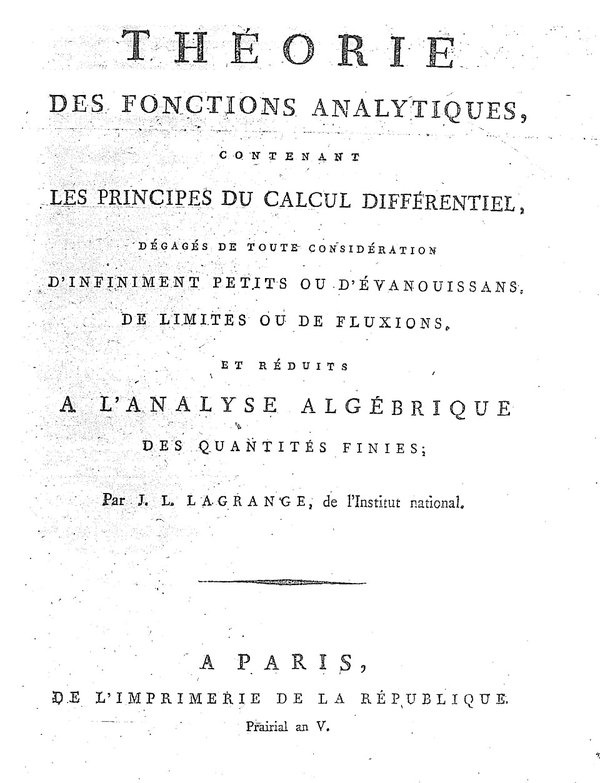
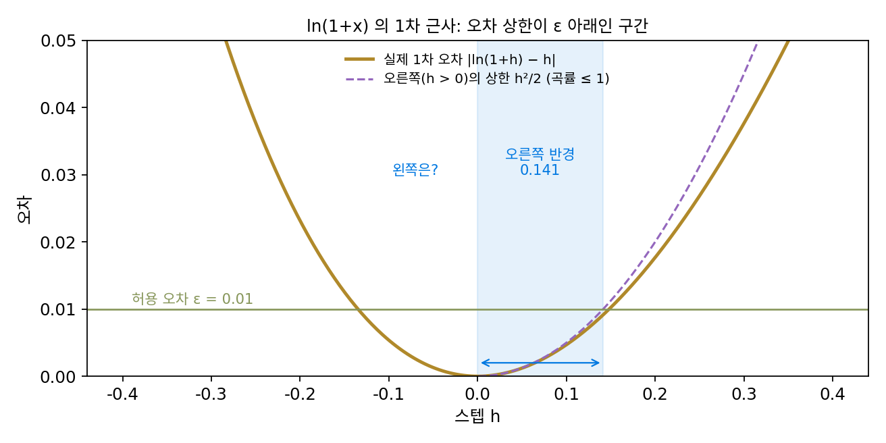
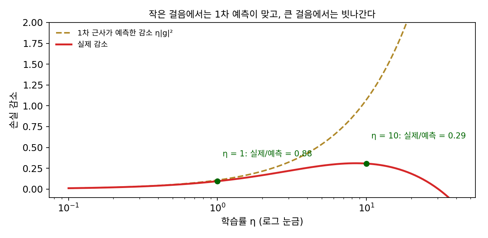
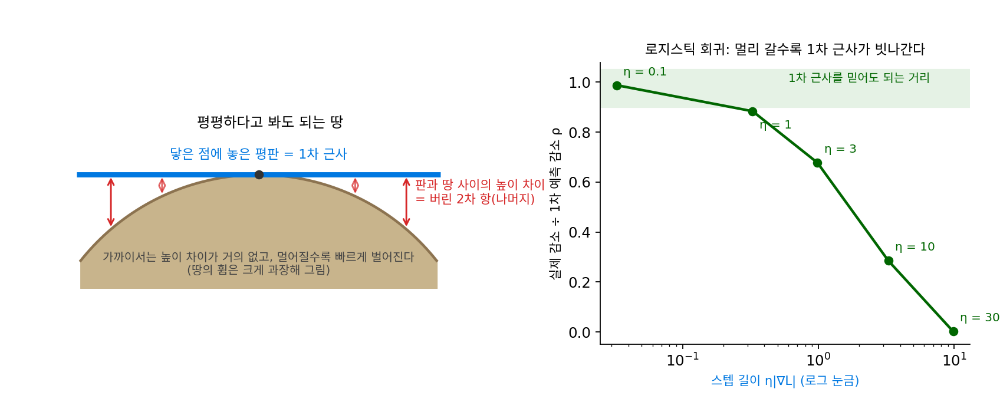
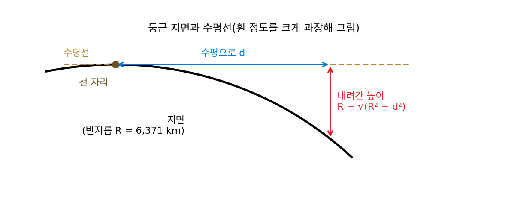
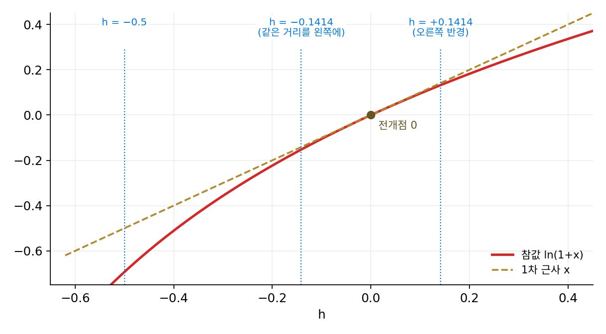
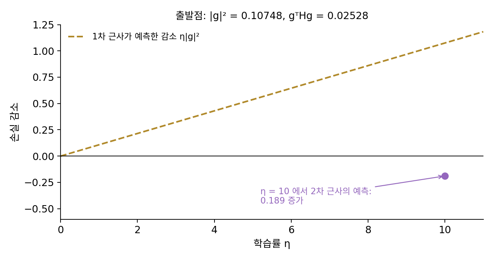

나머지항: 근사를 믿을 수 있는 반경
ln(1 + x)의 급수는 전개점에서 1보다 먼 곳에서는 차수를 올릴수록 더 틀렸고, 코시의 함수에서는 급수가 수렴하는데도 참값과 달랐다. 옵티마이저 입장에서 이 일은 남의 이야기가 아니다. 스텝을 옮기기 전에 「이 스텝이면 근사가 얼마나 틀릴 수 있나」를 알아야 그 스텝을 믿을지 정할 수 있다. 끊고 버린 항들의 합, 곧 근사와 참값의 차이를 스텝을 옮기기 전에 계산할 수는 없을까?
역사: 라그랑주가 버린 항의 크기를 묻다
테일러 정리를 미분학의 기본 원리라고 부른 라그랑주는 1797년 『해석 함수론(Théorie des fonctions analytiques)』에서 한 걸음 더 나아갔다. 에콜 폴리테크니크에서 처음 가르친 강의를 바탕으로 쓴 이 책에서 그는 무한히 작은 양이나 극한을 쓰지 않고, 모든 함수를 테일러 급수로 펼칠 수 있다고 가정한 채 미분학 전체를 세우려 했다. 급수를 근사로 쓰려면 버린 항들이 낳는 오차를 가늠할 수 있어야 한다는 문제의식도 그에게 있었고, 이 책에서 그는 n차까지 끊은 근사의 오차를 (n + 1)차 미분 하나로 적는 꼴을 냈다. 지금 라그랑주 꼴 나머지라 부르는 것이다.

모든 함수를 급수로 펼칠 수 있다는 그의 가정은 오래가지 못했다. 1823년 코시가 0에서 모든 미분이 0인데도 0이 아닌 함수 e−1/x²을 들어, 급수가 수렴해도 원래 함수와 다를 수 있음을 보였기 때문이다. 그래도 라그랑주의 나머지는 남았다. 급수가 함수를 나타내느냐와 상관없이, 몇 차에서 끊은 근사가 얼마나 틀릴 수 있는지를 말해 주기 때문이다.

오차가 궁금하면 참값에서 빼 보면 되잖아요. 계산기로 ln 1.5를 구해서요.

1797년의 라그랑주에게 그 참값은 어디서 나오죠?

아… 참값도 급수나 표로 구해야 하네요. 근사의 오차를 또 다른 근사로 재는 꼴이에요.

그러면 참값 없이 오차를 말할 방법이 필요했겠네요. (n + 1)차 미분 하나로 적는다는 건, 그 미분이 얼마나 큰지만 알면 된다는 뜻이에요?

그래요. 그런데 라그랑주가 기댄 가정, 모든 함수를 급수로 펼칠 수 있다는 가정은 어떻게 됐죠?

코시의 e−1/x²에서 깨졌어요. 그런데 나머지는 남았다고 했잖아요. 급수가 함수와 달라도 나머지는 왜 맞아요?

나머지는 급수 전체가 아니라 n차에서 끊은 다항식 하나가 얼마나 틀리는지만 말하니까요.

그럼 걸어갈 구간에서 미분의 크기만 알면, 스텝을 옮기기 전에 얼마나 틀릴지 알 수 있는 거예요? 학습률도 그렇게 정할 수 있어요?
ln(1 + x)의 1차 근사를 믿는 반경
n차에서 끊은 테일러 다항식이 참값과 다른 양 Rn(h)는, 전개점 a와 a + h 사이의 어느 점 ξ(크시)에서 잰 (n + 1)차 미분 하나로 적을 수 있다.
ξ가 정확히 어디인지는 모른다. 그래도 걸어갈 구간에서 (n + 1)차 미분의 크기가 가장 큰 값을 알면 나머지의 상한을 스텝을 옮기기 전에 계산할 수 있다. 근사가 끊고 버린 항들의 합을 나머지항 (근사가 버린 부분의 크기 / remainder term)이라 하고, 이 상한이 근사를 얼마나 믿을지를 정한다.
ln(1 + x)의 1차 근사(n = 1)로 해 보자. 나머지는 R₁ = ½f″(ξ)h²이고 f″(x) = −1/(1 + x)²이다. 오른쪽으로 걸으면(h > 0) ξ ≥ 0이라 |f″(ξ)| ≤ 1이고, 오차는 h²/2를 넘지 않는다. h = 0.5라면 상한은 0.125, 실제 오차는 0.0945다. 실제 오차 0.0945를 ½|f″(ξ)| × 0.25로 놓고 ξ를 거꾸로 풀면 0.1499가 나와, 정말 0과 0.5 사이에 있다.
이제 물음을 뒤집자. 허용 오차 ε(엡실론)를 먼저 정하면, h²/2 ≤ ε에서 1차 근사를 믿어도 되는 스텝은 h ≤ √(2ε)다. ε = 0.01이면 반경은 0.1414이고, 그 자리의 실제 오차는 0.00915로 허용 오차 안이다. 2차 근사라면 나머지 상한이 (2/3!)h³ = h³/3이라 반경이 (3ε)1/3 = 0.3107로 두 배 넘게 넓다. 허용 오차를 0.001로 줄이면 1차 근사의 반경은 0.0447, 2차 근사의 반경은 0.1442가 된다. 높은 차수일수록 같은 허용 오차에서 더 멀리 믿을 수 있고, 허용 오차를 줄이면 반경도 준다. 다만 반경이 몇이든 테일러 전개의 수렴 반경(여기서는 1)을 넘어설 수는 없다.

ML에서: 학습률은 1차 근사를 믿는 반경이다
경사하강의 한 스텝은 길이가 η|∇𝓛|이므로, 학습률을 정하는 일은 1차 근사를 믿고 얼마나 멀리 갈지를 정하는 일이다. 1차 근사를 처음 시험했던 로지스틱 회귀(입력 2개, 샘플 200개, 씨앗 고정, 출발점의 |∇𝓛|² = 0.1075)에서 학습률을 키워 가며 「실제 감소 ÷ 1차 근사가 예측한 감소」를 재면 다음과 같다. 이 비를 ρ(로)라 하자.
| 학습률 η | 스텝 길이 η|∇𝓛| | 1차 예측 감소 | 실제 감소 | 비 ρ | | — | — | — | — | — | | 0.1 | 0.0328 | 0.01075 | 0.01062 | 0.988 | | 1 | 0.3278 | 0.10748 | 0.09499 | 0.884 | | 3 | 0.9835 | 0.32245 | 0.21871 | 0.678 | | 10 | 3.2785 | 1.07484 | 0.30662 | 0.285 | | 30 | 9.8354 | 3.22453 | 0.00657 | 0.002 |
스텝이 짧을 때는 ρ가 1에 가깝고, 스텝이 1차 근사를 믿을 거리를 넘어서면 ρ가 떨어진다. 학습률 30에서는 1차 근사가 3.22만큼 준다고 했지만 실제로는 0.0066밖에 줄지 않았다. 1차 근사의 나머지 −½ΔθᵀH(ξ)Δθ가 스텝의 제곱으로 커져 예측을 거의 다 갉아먹은 것이다. 걸어갈 구간에서 곡률이 넘지 않는 상한을 알면, 학습률을 어디까지 키워도 손실이 반드시 준다는 약속을 만들 수 있다. 그 상한은 움직인 거리에 비해 그래디언트가 바뀌는 비율의 상한(립시츠 상수)이라는 이름으로 다시 만난다.

비 ρ를 스텝마다 재서 스텝 크기를 고치는 방법도 있다. 케네스 레벤버그(Kenneth Levenberg)는 미군 프랭크퍼드 병기창에서 일하던 1944년 「최소제곱의 몇몇 비선형 문제를 푸는 방법」을 냈고, 도널드 마쿼트(Donald Marquardt)가 듀폰의 통계학자로 일하던 1963년에 같은 방법을 다시 찾아 다듬었다. 두 사람의 이름을 딴 레벤버그–마쿼트 방법은 지금 신뢰 영역 방법이라 부르는 생각으로 읽을 수 있다. 근사를 믿는 반경 안에서만 스텝을 고르고, 실제 감소와 예측 감소를 견줘 ρ가 크면 반경을 넓히고 작으면 좁힌다.
학습률을 정하는 일은 땅을 평평하다고 봐도 되는 거리를 정하는 일에 빗댈 수 있다. 둥근 땅도 한 점 가까이에서는 그 점에 닿게 놓은 평판과 거의 겹친다. 판 위에서 거리를 재고 길을 정하는 것이 1차 근사이고, 판과 땅 사이의 높이 차이가 1차 근사가 버린 나머지다. 판 위로 조금 걸을 때는 그 높이 차이를 무시해도 되지만, 멀리 갈수록 판과 땅이 빠르게 벌어져 판을 믿고 정한 길이 땅과 어긋난다. 로지스틱 회귀의 비 ρ가 스텝이 길어질수록 1에서 0으로 떨어진 것이 그 어긋남이다.

문제 10. 지구를 평평하다고 봐도 되는 거리
지구는 반지름 R = 6,371 km인 공이다. 땅 위의 한 점에서 수평으로 d만큼 가면 지면은 수평선에서 R − √(R² − d²)만큼 내려가 있다. (가) d = 1 km, 10 km, 100 km에서 내려간 높이를 구하라. (나) √(R² − d²)를 d에 대한 2차 근사로 바꾸면 내려간 높이는 어떤 식이 되는가? (다) 내려간 높이를 1 cm까지 무시하는 측량이라면 땅을 몇 km까지 평평하다고 봐도 되는가? 1 m까지 무시한다면?

1 km에서 0.0785 m, 10 km에서 7.8481 m, 100 km에서 784.85 m예요. 거리가 10배 늘 때마다 높이는 100배씩 늘어요.
(나)는 √(R² − d²) = R√(1 − d²/R²)이고, √(1 − u) ≈ 1 − u/2를 쓰면 R − d²/(2R)이에요. 그러니까 내려간 높이는 d²/(2R). 100 km에서도 784.81 m라 실제 784.85 m와 거의 같아요.
평평하다는 가정은 몇 차 근사였죠? 그리고 그 근사가 버린 것은요?

평평하다는 건 지면을 접선으로 본 거니까 1차 근사고, 버린 게 d²/(2R)라는 2차 항이에요. 그래서 오차가 거리의 제곱으로 커지고요.
그럼 (다)는요?
d²/(2R) ≤ 0.01 m를 풀면 d ≤ √(2R × 0.01) = 0.357 km, 1 m면 3.570 km예요.

무시할 높이를 100배 늘렸는데 평평하다고 볼 거리는 10배밖에 안 늘었네요. 반경이 √ε에 비례하니까요.
그럼 허용 오차를 반으로 줄이면 반경은 얼마나 줄죠?

1/√2배, 0.71배요. 허용 오차를 많이 줄여도 반경은 그만큼 줄지 않아요.

동네 지도는 평평하게 그려도 아무 문제 없는데 비행기 항로는 지구가 둥글다는 걸 따져야 하는 이유가 이거였군요.
문제 11. 왼쪽으로 걸을 때의 반경
ln(1 + x)를 전개점 0에서 1차 근사로 쓰고, 허용 오차는 ε = 0.01로 둔다. 오른쪽(h > 0)의 반경 √(2ε) = 0.1414는 오른쪽에서 |f″| ≤ 1임을 써서 얻었다. (가) 같은 반경을 왼쪽에도 써서 h = −0.1414로 걸으면 실제 오차는 얼마인가? (나) 왼쪽 구간 [−r, 0]에서 |f″(x)| = 1/(1 + x)²의 최댓값은 얼마이고, 그 값으로 왼쪽의 반경을 다시 구하면 얼마인가? (다) h = −0.5에서 오른쪽 식 h²/2로 잰 상한과 실제 오차를 견줘라.

반경 √(2ε)는 h²/2 ≤ ε에서 나왔고 h²은 부호와 상관없으니까, 왼쪽도 0.1414겠네요.
(가)를 계산해 볼게. ln(1 − 0.1414) + 0.1414 = −0.01106이라서 오차가 0.01106이야. 0.01을 넘었어.
나머지 ½f″(ξ)h²에서 ξ는 어디에 있는 점이었죠?

전개점과 걸어간 곳 사이요. 아, 왼쪽으로 걸으면 ξ가 음수고, 1/(1 + ξ)²은 1보다 커요. 오른쪽에서 쓴 |f″| ≤ 1을 왼쪽에도 그대로 가져다 쓴 게 잘못이었어요. x = −1에 가까울수록 곡률이 커지니까요.
그럼 왼쪽 반경은 어떻게 정하면 될까요?
[−r, 0]에서 곡률이 가장 큰 곳은… x = −1에 가까운 쪽이니까 −r이고, 그 값이 1/(1 − r)²이에요.
그 곡률로 상한을 세워 0.01 아래에 두면요?
r²/(2(1 − r)²) ≤ 0.01, 양쪽에 제곱근을 씌우면 r/(1 − r) ≤ 0.1414, r = 0.1414/1.1414 = 0.1239예요.
그 자리에서 재 보면 실제 오차가 0.00837이야. 허용 오차 안이네.
(다)는요?

(다)는 오른쪽 식으로는 0.125인데 실제 오차는 0.1931이에요. 상한이라던 값을 실제가 넘었어요.
상한을 실제가 넘었으면 곡률을 잘못 잡은 거야. 왼쪽 0.5까지의 최악 곡률 1/(0.5)² = 4로 다시 재면 상한이 4 × 0.25 / 2 = 0.5라서, 실제 0.1931이 그 안에 들어와.
그럼 상한은 어디서 잰 곡률로 잡아야 하죠?
걸어갈 구간 전체에서 가장 휜 곳이요. 반경은 방향마다 다를 수 있고요.

등산로 지도에 「여기서부터 1 km는 평탄」이라고 적혀 있어도, 내려가는 쪽과 올라가는 쪽은 경사가 다를 수 있으니 따로 봐야 하는 거네요.
문제 12. 2차 근사로 학습률 고르기
1차 근사를 시험한 로지스틱 회귀(입력 2개, 샘플 200개, 씨앗 고정)의 출발점에서, 그래디언트 반대쪽으로 학습률 η만큼 걸을 때 2차 근사가 예측하는 감소는 η|g|² − ½η²gᵀHg이다. 출발점에서 |g|² = 0.10748, gᵀHg = 0.02528이다(g는 출발점의 그래디언트, H는 출발점의 헤시안). (가) 2차 근사가 가장 큰 감소를 예측하는 학습률은 얼마이고, 그때 실제 감소는? (나) 2차 근사가 η = 10에서 예측하는 손실 증가 0.189를, 위의 학습률 표에서 찾은 같은 학습률의 실제 감소와 견줘라. (다) 2차 근사가 먼 스텝에서 왜 어긋나는지 곡률로 설명하라.

(가)는 포물선의 꼭짓점이니까 η = |g|²/(gᵀHg) = 4.2512이고, 2차 근사가 예측하는 감소는 0.22847이에요. 2차 근사는 휨까지 넣었으니까, 이 학습률이 실제로도 가장 많이 줄이는 학습률이겠죠.
그때 실제 감소는 0.26275야. 그런데 학습률을 촘촘히 바꿔 가며 실제 감소를 재 보면 가장 크게 주는 학습률은 8.466이고, 그때 감소가 0.31048이야. 2차 근사가 고른 4.25는 그 반쯤이야.
(나)도 볼까요? 2차 근사는 η = 10이면 손실이 오히려 는다고 했어요.
표를 보면 실제로는 0.30662만큼 줄어요. 2차 근사는 늘어난다는데 실제는 거의 가장 많이 줄어드는 자리예요.
2차 근사도 휨이 끝까지 그대로라고 볼 때만 맞는 거였네. 그래디언트 방향의 곡률을 걸어간 자리마다 재면 출발점 0.2352, η = 5에서 0.0823, 10에서 0.0242, 20에서 0.0042로 점점 작아져.
로지스틱 손실은 모델이 한쪽으로 확신할수록 평평해져요. 샘플 하나의 곡률이 모델이 정답일 확률 p로 p(1 − p)니까, p가 1이나 0에 가까워지면 곡률이 0으로 가요. 2차 근사가 먼 곳에서 실제보다 비관하는지 낙관하는지는 늘 같을까요?
이 손실에서는 곡률이 줄어드니까 2차 근사가 먼 곳을 너무 비관해요.
곡률이 커지는 손실이면?
거꾸로 너무 낙관했겠지. 2차 근사의 꼭짓점도 결국 2차 근사를 믿는 반경 안에서만 믿을 수 있는 거야.
첫 시험 성적으로 학기 말 성적을 예측하면 처음 몇 주는 맞다가 과목이 어려워지면 빗나가는데, 출발점의 곡률로 먼 곳을 내다본 2차 근사도 그렇네요. 지금 그래디언트와 휨이 계속된다는 가정이 멀리 갈수록 깨져요.